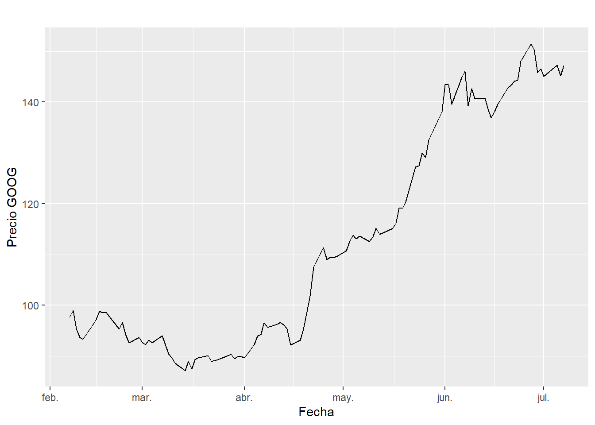
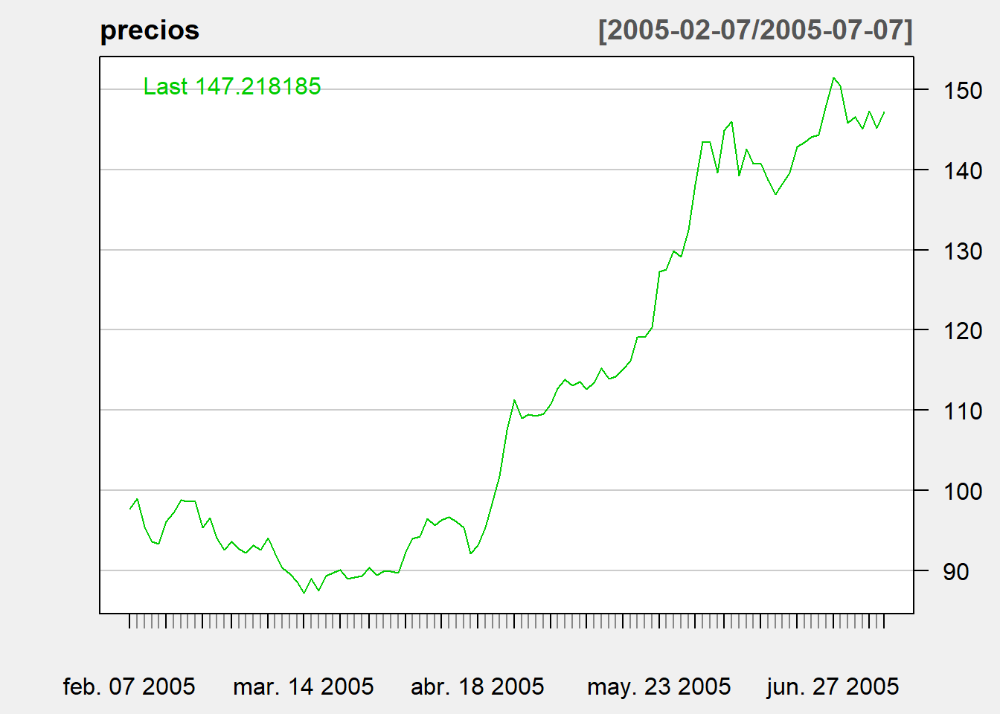
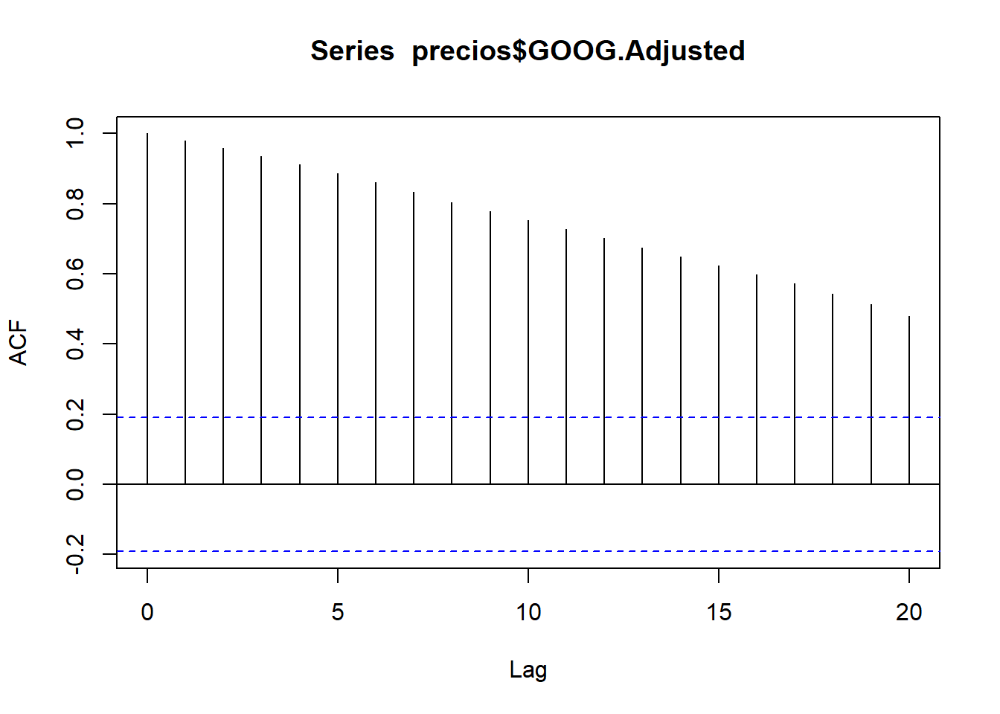
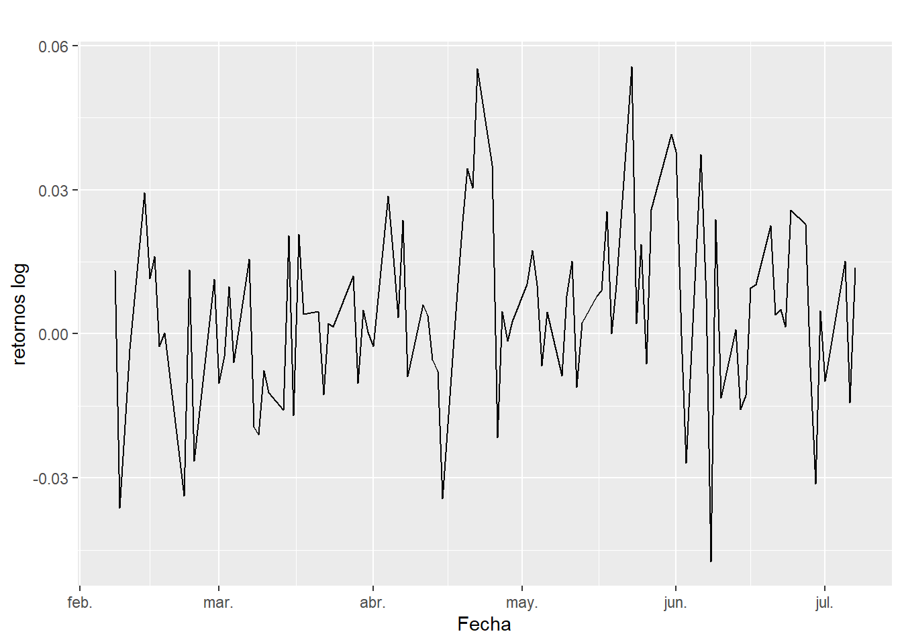
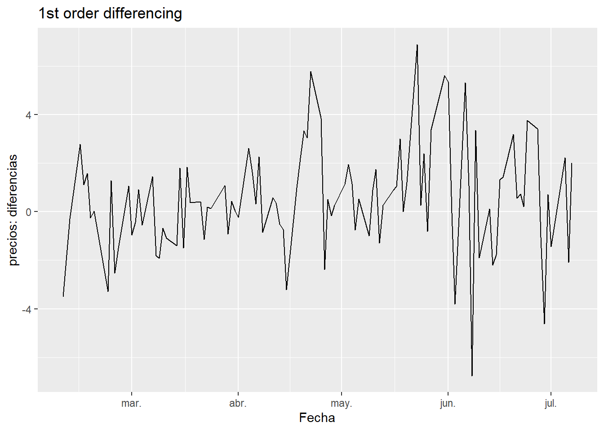
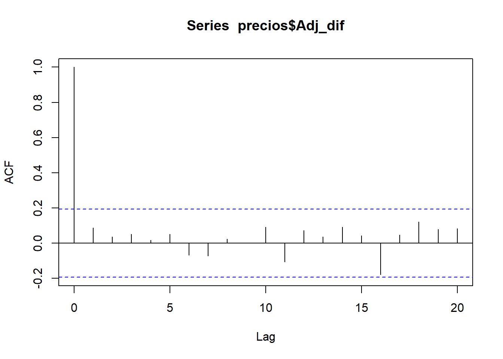
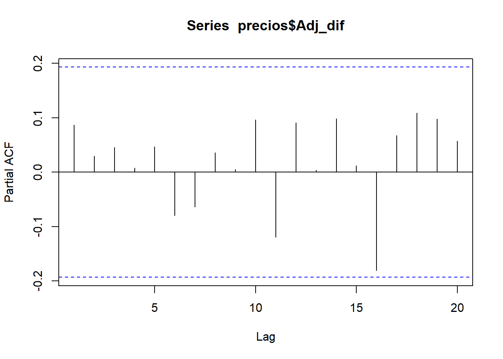
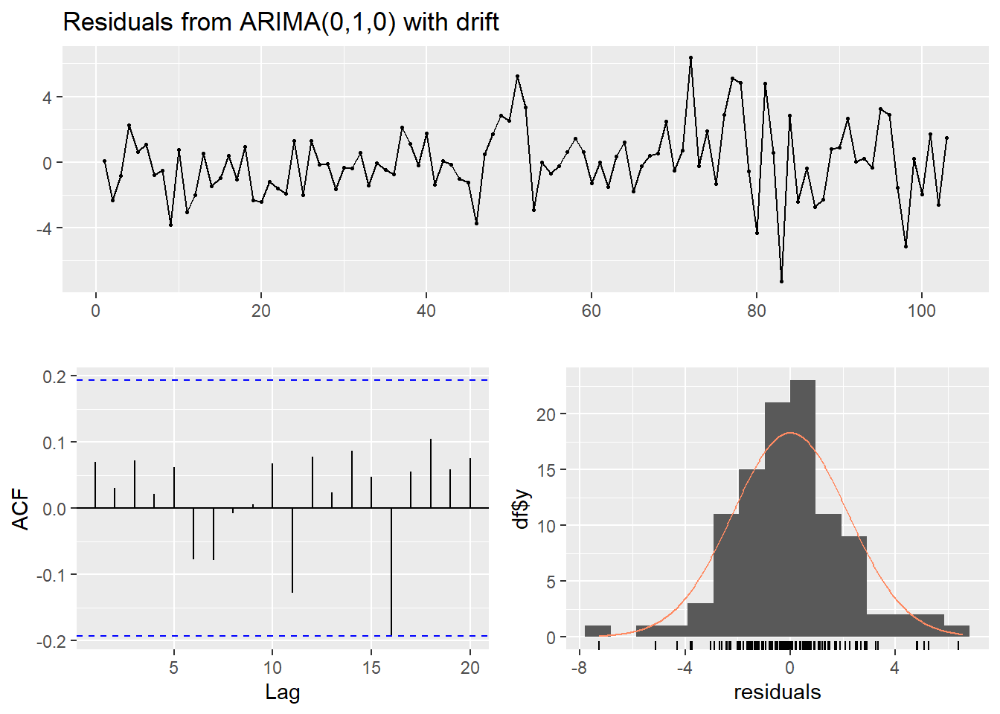

Sección 19 Serie de tiempo
19.1 Objetivo
Realizar un pronóstico con base en una serie de tiempo de datos, utilizando un modelo ARIMA
Fuente: El siguiente ejemplo fue publicado por Hassan OUKHOUYA (14/09/2021). Financial Time series Analysis and Forecasting using R. https://rpubs.com/HassanOUKHOUYA/time_series
19.2 Cargar datos
- Decargar datos de la acción de Google (ticker GOOG) desde la web (yahoo finance), utilizando el paquete quantmod de R
- Esto para el periodo de 2005-02-07 hasta 2005-07-08
- Mostrar los útlimos 6 registros de estos datos
if(!require('quantmod')) install.packages('quantmod'); library(quantmod)
stockEnv <- new.env()
tickers <- c('GOOG')
startDate <- '2005-02-07'
endDate <- '2005-07-08'
getSymbols(Symbols = tickers,
env = stockEnv,
src = 'yahoo',
from = startDate,
to = endDate)## [1] "GOOG"data <- stockEnv$GOOG
tail(data)## GOOG.Open GOOG.High GOOG.Low GOOG.Close GOOG.Volume GOOG.Adjusted
## 2005-06-29 150.6852 151.6217 145.5295 145.8135 36734576 145.8135
## 2005-06-30 146.6204 148.9069 144.9766 146.5258 30301955 146.5258
## 2005-07-01 146.9691 147.5669 144.0700 145.0812 18524375 145.0812
## 2005-07-05 145.5046 147.4374 144.5731 147.3029 15044179 147.3029
## 2005-07-06 148.0949 148.2443 145.1459 145.2157 16060574 145.2157
## 2005-07-07 144.1547 147.3477 143.7163 147.2182 21424203 147.2182- Seleccionar los precios ajustados (GOOG.Adjusted) únicamente y asignarlos a una variable “precios”
- Mostrar los útlimos 2 registros de estos datos
- Mostrar, de cuál clase (class) es la variable “precios”
# Seleccionar los precios ajustados (GOOG.Adjusted) únicamente
precios <- data$GOOG.Adjusted
tail(precios,2)## GOOG.Adjusted
## 2005-07-06 145.2157
## 2005-07-07 147.2182# class(precios) # "xts" "zoo"- Presentar un resumen estadístico de los precios (de la serie de tiempo)
- Observar el nombre de la “primera” columna de estos datos
summary(precios) # o summary(precios$GOOG.Adjusted)## Index GOOG.Adjusted
## Min. :2005-02-07 Min. : 87.17
## 1st Qu.:2005-03-16 1st Qu.: 93.35
## Median :2005-04-22 Median :107.50
## Mean :2005-04-22 Mean :111.94
## 3rd Qu.:2005-05-31 3rd Qu.:136.89
## Max. :2005-07-07 Max. :151.4819.3 Graficar la serie
- Graficar los datos, utilizando el paquete ggplot2 y un diagrama de línea, donde en el eje horizontal deben salir las fechas (de los precios) y en el eje vertical los precios (del activo) como tal
- ¿Qué es lo que se puede decir, sobre la tendencia de esta serie de tiempo, basado en la gráfica construida?
if(!require('ggplot2')) install.packages('ggplot2'); library(ggplot2)
# fortify convierte de la clase un xts / zoo en un data frame
p <- ggplot(fortify(precios), aes(x=Index, y=GOOG.Adjusted)) + geom_line() + labs(x = 'Fecha', y = 'Precio GOOG', title = '')
p
- Graficar los datos, pero ahora utilizando la función chartSeries() del paquete quantmod, aplicando como tipo del diagrama “bars” (barras)
# Graficar los datos, utilizando la función chartSeries() del paquete quantmod
chartSeries(precios, type = "bars", theme="white",main="Google Stock")
19.4 Comprobar, si es estacionaria
- Una serie de tiempo es estacionaria, cuando ésta es estable a lo largo del tiempo (es decir, media y varianza son constantes en el tiempo)
- H0: La serie de datos no es estacionaria
- H1: Sí, la serie es estacioanria (= series has no unit root)
- Para realizar esta prueba, con respecto a las hipotésis mencionadas, utilizar el Augmented Dickey-Fuller test (ADF), del paquete tseries de R (función: adf.test())
- Si el “valor p,” que arroja la prueba, es mayor que 5% (0.05), la serie no es estacionaria (non stationary)
if(!require('tseries')) install.packages('tseries'); library(tseries)## Loading required package: tseriesadf.test(precios$GOOG.Adjusted) # p-value 0.5848##
## Augmented Dickey-Fuller Test
##
## data: precios$GOOG.Adjusted
## Dickey-Fuller = -1.9804, Lag order = 4, p-value = 0.5848
## alternative hypothesis: stationary19.5 Identificando una serie no estacionaria
- Aplicar la función acf(): autocorrelation factor
# Aplicar la función acf() del paquete stats
acf(precios$GOOG.Adjusted)
- Nota: Dado que el ACF del precio no cae a cero con relativa rapidez y el valor de la autocorrelación es relativamente alto y positivo, la serie no es estacionaria.
19.5.1 Convertir a estacionaria
Hay tres técnicas comúnmente utilizadas para hacer que una serie de tiempo sea estacionaria:
- Eliminación de la tendencia: se elimina el componente de tendencia de la serie de tiempo
- Diferenciación: esta es la técnica comúnmente utilizada para eliminar la no estacionariedad. Aquí tratamos de modelar las diferencias de los términos (precios) y no el término real (precio como tal). Esta diferenciación es la parte de la integración en AR(I)MA
- Estacionalidad: la estacionalidad se puede incorporar fácilmente en el modelo ARIMA directamente.
19.5.2 Retornos log
- Vamos a calcular el retorno logarítmico para que la serie sea estacionaria, que es exactamente la diferenciación:
- Primero, calcular entonces los retornos logarítmicos para los precios del activo (nota: esto genera al inicio un registro con NA.)
- Agregar estos retornos log como una nueva columna a “precios”
- Eliminar el registro con NA (p.ej. utilizando la función na.omit())
- Mostrar las primeras 6 filas de los datos
log.ret <- diff(log(precios$GOOG.Adjusted), lag=1) # genera un NA al inicio
precios$log.ret <- log.ret # agregar una nueva columna con los retornos log
precios <- na.omit(precios) # omitir registro/s con NA
# head(precios)- Graficar los retornos log calculados, utilizando ggplot y un diagrama de línea
library(ggplot2)
p.log <- ggplot(precios, aes(x=Index, y=log.ret)) + geom_line() + labs(x='Fecha', y = 'retornos log', title = ' ')
p.log
- Se pueden observar aumentos y disminuciones “fuertes” en la volatilidad de los retornos logarítmicos
- Es decir, la varianza cambia con el tiempo
19.5.3 Diferenciar (1st order)
- Intentar estabilizar la serie de tiempo diferenciándola (1st order differencing de los precios (atributo: GOOG.Adjusted)
- Agregar estos datos diferenciados como una nueva columna al objeto / a la variable “precios”
- Graficar los datos (precios) diferenciados, utilizando ggplot
# Diferenciar la serie de tiempo (1st order differencing)
precio_dif <- diff(precios$GOOG.Adjusted)
precios$Adj_dif <- precio_dif
precios <- na.omit(precios)
#head(precios, 3)
library(ggplot2)
p.dif <- ggplot(precios, aes(x=Index, y=Adj_dif)) + geom_line() + labs(x='Fecha', y = 'precios: diferencias', title = '1st order differencing')
p.dif
- Se puede observar que los datos de la gráfica no muestran una tendencia (variación de la media en el tiempo). También que, en términos generales, la varianza no cambia mucho en el tiempo
- Realizar nuevamente la prueba Augmented Dickey-Fuller (ADF), función adf.test(), ahora con los datos diferenciados y utilizando el parámetro alternative=“stationary”
- Analizar el “valor p” (ahora se espera que este se ubica por debejo del umbral de 5%)
# ADF para los precios diferenciados
adf.test(precios$Adj_dif, alternative="stationary") # p-value = 0.01493 ##
## Augmented Dickey-Fuller Test
##
## data: precios$Adj_dif
## Dickey-Fuller = -3.9705, Lag order = 4, p-value = 0.01333
## alternative hypothesis: stationary- Se puede observar que el valor p es alredor de 1,4% (menor que 5%) y por lo tanto la serie de tiempo es ahora estacionaria
- Ahora, se pueden determinar las parámetros p y q para el modelo ARIMA
19.6 ARIMA
19.6.1 acf
- Generar primero una gráfica que muestra la autocorrelación normal, utilizando los datos diferenciados (aquí: precios$Adj_dif) y la función acf()
# ARIMA
# Normal and Partial Autocorrelation Functions ACF & PACF
acf(precios$Adj_dif)
- La gráfica (acf) anterior muestra que el rendimiento diario (o la primera diferencia, 1st order differencing) de los precios de las acciones de Google están cerca del ruido blanco (todos los ACF son cerca de cero). El ACF baja relativamente rapido a “cero,” lo que indica que la serie de tiempo es estacionaria
19.6.2 pacf
- Ahora, generar una gráfica que muestra la autocorrelación parcial, utilizando los datos diferenciados (aquí: precios$Adj_dif) y la función pacf()
# Partial Autocorrelation Function
pacf(precios$Adj_dif)
- Todos los pacf están cerca cerca de cero, lo que indica que la serie de tiempo es estacionaria
19.6.3 auto.arima
- Ahora podemos crear un modelo ARIMA (autorregresivo integrado de media móvil), utilizando el paquete forecast de R y la función auto.arima() con los datos diferenciados (precios$Adj_dif) y el parámetro seasonal=FALSE
- Esto explora combinaciones (p,d,q para ARIMA) mediante la función auto.arima(). El resultado (la combinación) que tenga el BIC y AIC más bajo sería nuestra elección
# ARIMA (auto arima)
if(!require(forecast)) install.packages('forecast'); library(forecast)## Loading required package: forecast##
## Attaching package: 'forecast'## The following object is masked from 'package:sets':
##
## %>%## The following object is masked from 'package:DescTools':
##
## BoxCoxmodelo.ARIMA <- auto.arima((precios$Adj_dif), seasonal=FALSE)
modelo.ARIMA # ARIMA(0,0,0) with non-zero mean ## Series: (precios$Adj_dif)
## ARIMA(0,0,0) with non-zero mean
##
## Coefficients:
## mean
## 0.4686
## s.e. 0.2182
##
## sigma^2 estimated as 4.95: log likelihood=-228.02
## AIC=460.04 AICc=460.16 BIC=465.31Nota: auto.arima resulta con los parámetros p,d,q todos en “0”
Recordar: d es la cantidad de veces que se realiza la diferenciación. ‘p’ es el orden del término ‘Auto Regresivo’ (AR). Se refiere al número de retrasos. ‘q’ es el orden del término ‘promedio móvil’ (MA). Se refiere a la cantidad de errores de pronóstico retrasados.
Utilizar auto.arima ahora con los precios (GOOG.Adjusted) de la acción (y no con los precios diferenciados como en el paso anterior)
# Comprobando ARIMA (auto arima)
if(!require(forecast)) install.packages('forecast'); library(forecast)
modelo1.ARIMA <- auto.arima((precios$GOOG.Adjusted), seasonal=FALSE)
modelo1.ARIMA # ARIMA(0,1,0) with drift ## Series: (precios$GOOG.Adjusted)
## ARIMA(0,1,0) with drift
##
## Coefficients:
## drift
## 0.5077
## s.e. 0.2168
##
## sigma^2 estimated as 4.841: log likelihood=-224.66
## AIC=453.32 AICc=453.44 BIC=458.57Observar que los parámetros para p.q,d son: 0,1,0
De acuerdo con lo anterior, implementar el modelo ARIMA
Luego muestra el resumen estadístico para el modelo implementado
#Implementar un modelo ARIMA (0,1,0)
modelo <- Arima(precios$GOOG.Adjusted, order=c(0,1,0), include.constant=T)
summary(modelo)## Series: precios$GOOG.Adjusted
## ARIMA(0,1,0) with drift
##
## Coefficients:
## drift
## 0.5077
## s.e. 0.2168
##
## sigma^2 estimated as 4.841: log likelihood=-224.66
## AIC=453.32 AICc=453.44 BIC=458.57
##
## Training set error measures:
## ME RMSE MAE MPE MAPE MASE
## Training set 0.0009215975 2.178703 1.61447 -0.05899551 1.418198 0.9627422
## ACF1
## Training set 0.07036134- Comprobar los residuos para el modelo ARIMA(0,1,0)
#Comprobar los residuos para el modelo ARIMA (0,1,0)
checkresiduals(modelo)
##
## Ljung-Box test
##
## data: Residuals from ARIMA(0,1,0) with drift
## Q* = 3.5602, df = 9, p-value = 0.9379
##
## Model df: 1. Total lags used: 10- Así podemos confirmar que los residuos son distinguibles de una serie de ruido blanco ya que los resultados son significativos.
19.7 Pronóstico
Graficar (con la función plot()) el pronóstico, utilizando la función forecast(), para los próximo 5 días (periodos: parámetro h=5)
Mostrar el resumen del pronóstico para los próximos 5 días, utilizando un nivel de confianza de 99% (level=99) y la función summary() para el pronóstico realizado
arima_forecast = forecast(modelo,h=5,level=99) # donde level es el nivel de confianza para el pronóstico
summary(arima_forecast)##
## Forecast method: ARIMA(0,1,0) with drift
##
## Model Information:
## Series: precios$GOOG.Adjusted
## ARIMA(0,1,0) with drift
##
## Coefficients:
## drift
## 0.5077
## s.e. 0.2168
##
## sigma^2 estimated as 4.841: log likelihood=-224.66
## AIC=453.32 AICc=453.44 BIC=458.57
##
## Error measures:
## ME RMSE MAE MPE MAPE MASE
## Training set 0.0009215975 2.178703 1.61447 -0.05899551 1.418198 0.9627422
## ACF1
## Training set 0.07036134
##
## Forecasts:
## Point Forecast Lo 99 Hi 99
## 104 147.7259 142.0586 153.3931
## 105 148.2336 140.2189 156.2483
## 106 148.7413 138.9253 158.5573
## 107 149.2490 137.9145 160.5835
## 108 149.7567 137.0843 162.429119.8 Ejercicio
Estudiar o revisar series de tiempo con base en la siguiente fuente: Morales-Oñate, V. (Junio 2021). Notas de clase - Series de Tiempo. https://bookdown.org/victor_morales/SeriesdeTiempo/